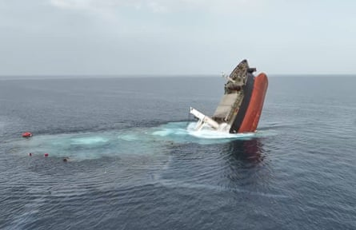

Four seafarers were rescued on Thursday after spending more than 48 hours in the waters of the Red Sea, as the search continued for the remaining crew of the Greek ship Eternity C, sank by the Houthis in an attack that killed at least four people.
Thursday’s rescue brought the total number of those saved to 10, including eight Filipino crew, one Indian and another Greek security guard.
Four members of the 25-member crew, three Filipinos and one Russian, were killed in the Houthi attacks. Eleven people were still missing, six of whom are believed to have been kidnapped by the Houthis , maritime security sources told Reuters.
“We remain deeply concerned for the welfare of the crew members in the custody of the Houthis, as well as for those currently unaccounted for,” said Ellie Shafik, the head of intelligence at the UK-based maritime risk management company Vanguard Tech. “Their safety and swift release must be a priority for all involved.”
The Eternity C was the second ship sank by the Houthis this week, breaking a May ceasefire with the US that was predicated on an end to attacks on vessels in the Red Sea. Houthi forces also sunk the Greek-owned Magic Seas on Sunday, with all the crew rescued.
The last time the Houthis attacked a merchant ship was in December 2024, coinciding with a Gaza ceasefire.
“We are now with grave concern seeing an escalation in the Red Sea with attacks on two commercial ships, with civilian loss of life and casualties, as well as the potential for environmental damage,” said Hans Grundberg, the UN special envoy to Yemen.
The US mission in Yemen accused the Houthis of kidnapping crew members and called for their release.
The Houthis first attacked the Eternity C on Monday with bombs, sea drones and rocket-propelled grenades fired from speed boats. Footage released by the Houthis showed a surface-to-surface missile being fired to the screams of “death to Israel!” and a large cloud of black smoke billowing from the Eternity C.
The ship was attacked again on Tuesday night, forcing the crew to jump into the water, as Houthi skiffs circled the vessel.
The Eternity C sinking after the attackPhotograph: Houthis Military Media Center handout/EPA
On Wednesday, the Houthi military spokesperson, Yahya Saree, said that its navy had rescued members of the ship’s crew, given them medical care and taken them to a “safe location”. The Houthis previously held the crew of another ship they attacked, the Galaxy Leader, for over a year. The Houthis have said that their attacks are in solidarity with Palestinians and a means of pressuring Israel to stop the war in Gaza, which has killed more than 57,000 people over the past 21 months.
The Houthis have also regularly launched ballistic missiles at Israel, the vast majority of which have been intercepted by the country’s missile defence system.
Early on Thursday morning, the Houthis said that they had attempted to hit Ben Gurion airport in Israel with a ballistic missile, which the Israeli military said they had intercepted.
The Houthis had threatened to resume maritime attacks on any Israeli-owned ships as the US considered firing missiles at Iran, which it eventually did on 22 June, striking three Iranian nuclear sites. The Iran-backed group then followed through on its threat by sinking the Greek-owned Magic Seas on Sunday and the Eternity C, neither of which were linked to Israel but the Houthis claimed were heading to ports in the country.
It was unclear how the US would respond to this week’s attacks in the Red Sea, which not only interrupted months of calm in the area but also were the first time that seafarers were killed by the Houthis in over a year.
The Red Sea is a vital shipping route, carrying about a third of the world’s total container traffic. By the end of 2024, traffic through the Red Sea had declined by about 75%, a result of the Houthi attacks on shipping vessels starting in November 2023, according to the World Bank.
The resumption of attacks caused anxiety among maritime merchants, with at least one Hong Kong flagged ship Blossom Glory listing its destination as “NO ISRAEL US EU LINK” as it passed by Yemen on Tuesday. Other ships listed similar destination ports.